MetaPlayer Framework
top ↑
MPF aims to satisfy the need for:
Metadata is provided by drop-in modules allowing for initialization from MRSS, SMIL, or enterprise transcription services. Additional interfaces, such as search and timed metadata, are also provided as services.
Interactivity is powered by PopcornJS, a Mozilla library for HTML5 events and UI plugins. Each MetaPlayer instance contains a PopcornJS instance, which can be initialized by MetaPlayer's cue manager. The cue manager allows for configuring, sequencing, and cloning of timed events before they are scheduled with PopcornJS. In addition to the UI plugins provided by PopcornJS, the MetaPlayer Framework provides resize-able, structured CSS and DOM upon which video overlays and controls can be placed.
To broaden the reach of HTML5 into enterprise and Flash-based players, the Metaplayer Framework of provides HTML5 adapters. Currently, MPF supports:
Overview
The MetaPlayer Framework is a player-independent, interactive media framework for web video.
MPF aims to satisfy the need for:
- Standards-based UI development, compatible with mobile devices.
- Interactive widgets, such as video search, scrolling transcript, or annotated timeline.
- Consistent initialization across players from MRSS or other web services
- Support for enterprise players
Metadata is provided by drop-in modules allowing for initialization from MRSS, SMIL, or enterprise transcription services. Additional interfaces, such as search and timed metadata, are also provided as services.
Interactivity is powered by PopcornJS, a Mozilla library for HTML5 events and UI plugins. Each MetaPlayer instance contains a PopcornJS instance, which can be initialized by MetaPlayer's cue manager. The cue manager allows for configuring, sequencing, and cloning of timed events before they are scheduled with PopcornJS. In addition to the UI plugins provided by PopcornJS, the MetaPlayer Framework provides resize-able, structured CSS and DOM upon which video overlays and controls can be placed.
To broaden the reach of HTML5 into enterprise and Flash-based players, the Metaplayer Framework of provides HTML5 adapters. Currently, MPF supports:
- HTML5
- YouTube
- JWPlayer
- Flowplayer
top ↑
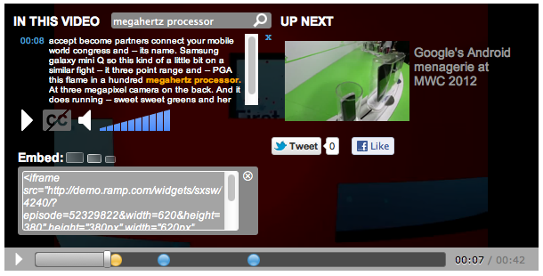
Include required Script and CSS:
Quick Start
The following quick start will set up a YouTube video, fetch metadata from RAMP services
and load up a PopcornJS instance with subtitles to be rendered by the MPF Captions plugin.
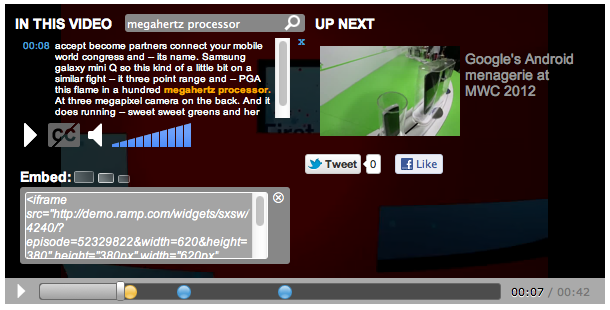
Include required Script and CSS:
<!-- jQuery-->
<script src="../external/jquery/jquery-1.7.1.js" type="text/javascript"></script>
<!-- Popcorn-->
<script src="../external/popcorn/popcorn.js" type="text/javascript"></script>
<!-- Metaplayer -->
<script src="../build/metaplayer-complete.min.js"></script>
<link href="../build/mp2/theme.mp2.css" rel="stylesheet" type="text/css">
<div id="myDiv" style="width: 500px; height: 300px "></div>
$( function () {
MetaPlayer( "#myDiv" )
.youtube()
.ramp( "http://dev.api.ramp.com/v1/mp2/playlist?e=52896312&apikey=0302cd28e05e0800f752e0db235d5440" )
.controls()
.captions()
.overlay()
.endcap()
.load();
});
top ↑
Widgets generally consist of a JavaScript source and a CSS file, and containa PopcornJS interface for responding to timed events during the playback of the video.
Many UI elements are provided with the MPF distribution:
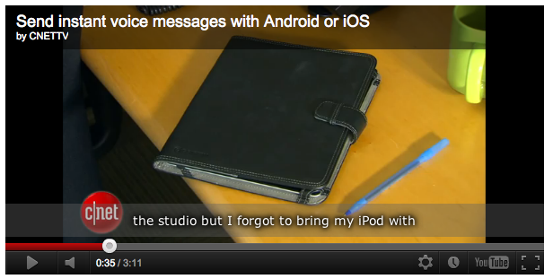

On iOS devices where mouse events are not supported, the overlay will contain a close button.
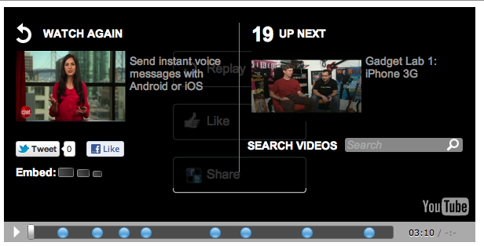
HTML:
By default subtitles are each rendered continuously on the same line. This behavior can be overwritten, with lines breaks for each subtitle and timestampes for each line.
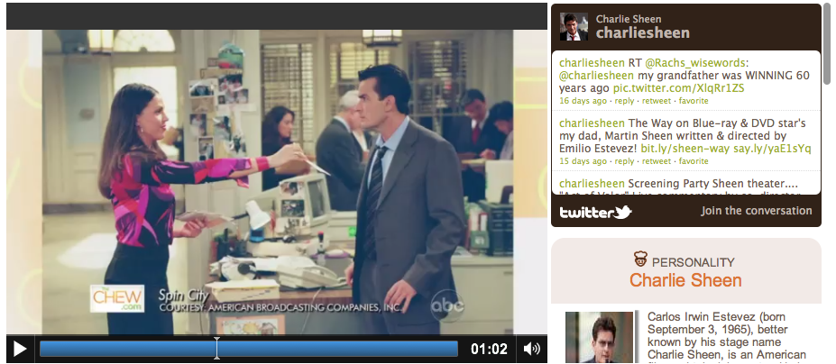
Using RAMP natural language services, these frames can be automatically generated across a large collection of videos, attaching different types of cards to differenct concepts, such as a live twitter feed for a celebrity, or nutritional information for a recipe.
HTML:
FrameFeed is implemented as a PopcornJS plugin, and can be used outside of a MetaPlayer instance.
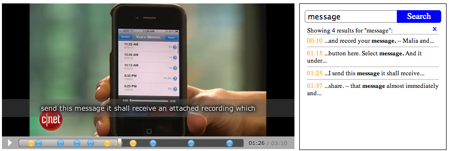
HTML:
Buttons are initialized with the "link" metadata attribute.
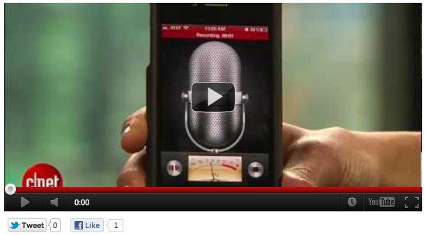
HTML:
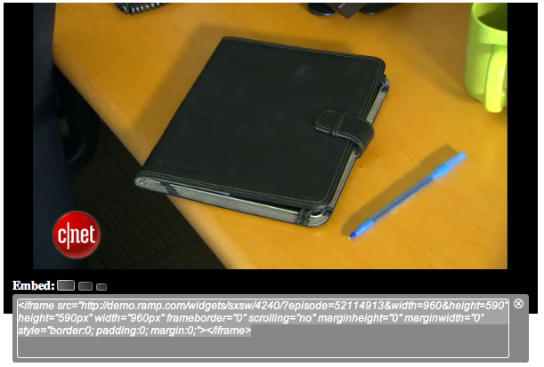
HTML:
Widgets
MetaPlayer widgets consist of any module which is visible to the user, with HTML and DOM elements placed
either over the video or elsewhere on the page. These widgets have access to the video element and all
metadata available through the MPF instance.
Widgets generally consist of a JavaScript source and a CSS file, and containa PopcornJS interface for responding to timed events during the playback of the video.
Many UI elements are provided with the MPF distribution:
Captions
The default Caption plugin provides CSS skin-able subtitles which dynamically scale with video size.
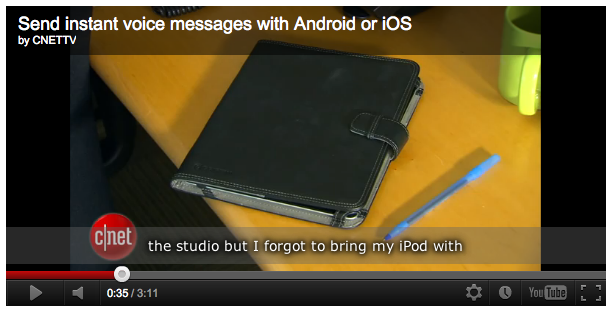
In JavaScript:
var metaplayer = MetaPlayer( "#myDiv" )
.youtube({ chromeless : false })
.ramp( "http://dev.api.ramp.com/v1/mp2/playlist?e=52114913&apikey=0302cd28e05e0800f752e0db235d5440" )
.captions()
.load();
Controls
The Controls plugin provides a annotation-enabled timeline, play button, and a display of the current
playback time in relation to the total duration. This plugin is designed to be used in conjunction with
the Overlay plugin, which provides additional controls for volume and enabling captions.
var metaplayer = MetaPlayer( "#myDiv" )
.youtube()
.ramp( "http://dev.api.ramp.com/v1/mp2/playlist?e=52114913&apikey=0302cd28e05e0800f752e0db235d5440" )
.controls()
.load();
Overlay
The Overlay plugin provides a drop down panel over the video which contains:
- additional playback, volume levels, and close captioning
- relevant tags
- video search-within
- Title and thumbnail ofthe next video in the playlist, if any
- Social buttons
- Embed buttons
HTML:
Social and Embed, are themselves plugins which will only be rendered if their relevant sources are included.
<!-- MetaPlayer: Overlay –>
<script src="../build/metaplayer.controls.js"></script>
var metaplayer = MetaPlayer( "#myDiv" )
.youtube()
.ramp( "http://dev.api.ramp.com/v1/mp2/playlist?e=52114913&apikey=0302cd28e05e0800f752e0db235d5440" )
.captions()
.overlay()
.load();
On iOS devices where mouse events are not supported, the overlay will contain a close button.
Endcap
The Endcap plugin is an overlay which appears at the end of a video containing:
- Title, thumbnail of current video and a prompt to watch again
- Title, thumbnail of next playlist video
- Countdown timer
- Social buttons
- Embed buttons
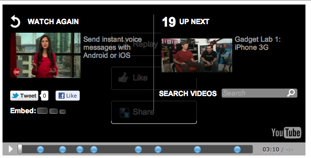
HTML:
<!-- MetaPlayer: Endcap -->
<script src="../build/metaplayer.endcap.js"></script>
var metaplayer = MetaPlayer( "#myDiv" )
.youtube()
.ramp( "http://dev.api.ramp.com/v1/mp2/playlist?e=52114913&apikey=0302cd28e05e0800f752e0db235d5440" )
.controls()
.endcap()
.load();
Transcript
The transcript plugin is an interactive page widget containing the full text of a video.
As the video plays, the transcript will highlight the current subtitle, adjusting the scroll as
necessary. If a height is specified on the transcript target an iOS-friendly scrollbar will appear.
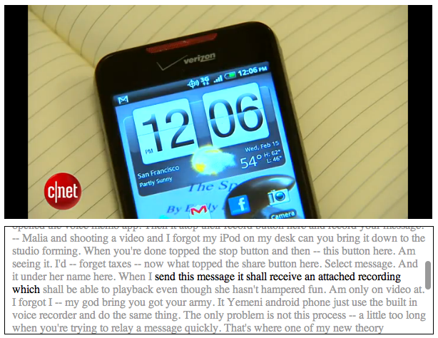
HTML:
<div id="transcript" style="height:150px; width: 600px"></div>
var player = MetaPlayer('#myDiv')
.youtube()
.ramp( "http://dev.api.ramp.com/v1/mp2/playlist?e=52114913&apikey=0302cd28e05e0800f752e0db235d5440" )
.transcript('#transcript')
.load()
By default subtitles are each rendered continuously on the same line. This behavior can be overwritten, with lines breaks for each subtitle and timestampes for each line.
var player.transcript('#transcript', {
timestamps: true,
breaks: true
});
FrameFeed
The FrameFeed plugin provides a twitter-style feed of IFrames which are loaded as the video plays.
These frames, or cards, can be uses to render related information or advertising based on
video content. Feeds can be filtered by tags, if desired. If a height is specified on the target an iOS-friendly scrollbar will appear.
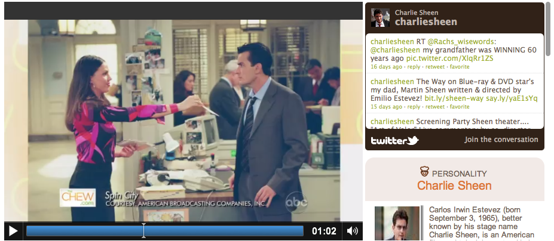
Using RAMP natural language services, these frames can be automatically generated across a large collection of videos, attaching different types of cards to differenct concepts, such as a live twitter feed for a celebrity, or nutritional information for a recipe.
HTML:
<div id="feed" style=" width: 330px; height:400px;"></div>
var metaplayer = MetaPlayer('#myDiv')
.html5()
.ramp( "http://publishing.ramp.com/thechewpoc/device/services/mp2-playlist?e=51416098" )
.framefeed("#feed", {
baseUrl : "http://publishing.ramp.com/thechewpoc/themename/1.0"
})
.load();
FrameFeed is implemented as a PopcornJS plugin, and can be used outside of a MetaPlayer instance.
var popcorn = Popcorn('video');
popcorn.framefeed ({
target : "#feed",
url : "http://www.example.com",
tags : "example"
height: 300,
start : 5
});
SearchBox
SearchBox is a page widget which provides a list of video keywords as well as video search-within.
By default, the rendered keyword links serve as search shortcuts. Search results include a timestamp
and excerpt which can be clicked to seek the video.
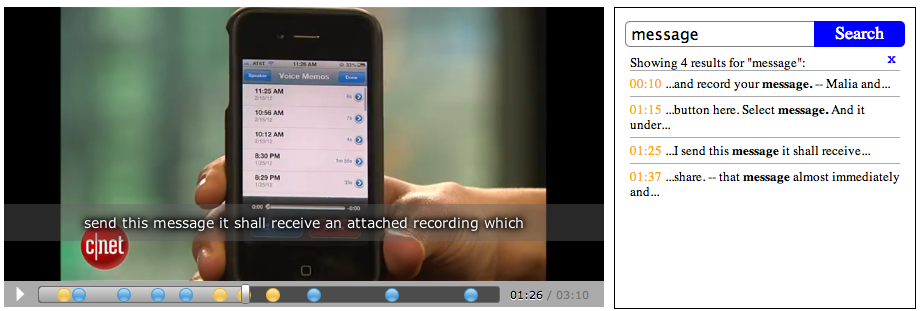
HTML:
<div id="search" style=" width: 300px; height:300px;"></div>
var player = MetaPlayer("#myDiv")
.youtube()
.controls()
.captions()
.ramp( "http://dev.api.ramp.com/v1/mp2/playlist?e=52114913&apikey=0302cd28e05e0800f752e0db235d5440" )
.searchbox("#search")
.load();
Social Buttons
The Social widget provides buttons which update to target the current playlist item. Currently,
Facebook and Twitter are provided.
Buttons are initialized with the "link" metadata attribute.
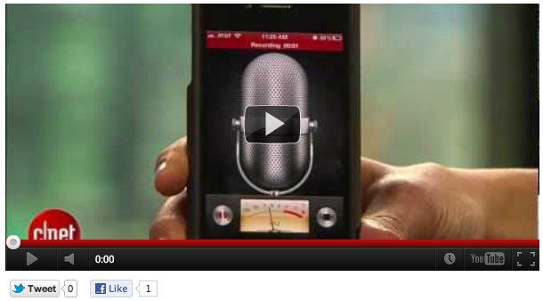
HTML:
<div id="social" style="height:40px; width: 300px"></div>
var metaplayer = MetaPlayer( "#myDiv" )
.youtube()
.controls()
.ramp( "http://dev.api.ramp.com/v1/mp2/playlist?e=52114913&apikey=0302cd28e05e0800f752e0db235d5440" )
.social("#social")
.load();
Embed Buttons
The Embed plugin provides buttons which, when clicked, reveal HTML for embedding the currently
playing video.
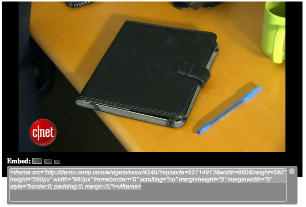
HTML:
<div id="embed" style="height:15px; width: 500px"></div>
var metaplayer = MetaPlayer( "#myDiv" )
.ramp( "http://dev.api.ramp.com/v1/mp2/playlist?e=52345506&apikey=0302cd28e05e0800f752e0db235d5440" )
.embed("#embed")
.load();
top ↑
Data Services
MRSS
The MRSS parser modules provides playlist urls and metadata. The MFSS file is loaded by AJAX, and restricted
by the normal same-domain browser policies.
var metaplayer = MetaPlayer( "#myDiv" )
.mrss( "example-mrss.xml" )
.captions();
.load();
metaplayer.video.autoplay = true;
RAMP
The RAMP data provider provides services for its SMIL feed which contains metadata, subtitles, timed metadata,
playlist, search, and popcornjs initialization. By default, the video source URL is set automatically based on playback
support.
var metaplayer = MetaPlayer( "#myDiv" )
.ramp( "http://dev.api.ramp.com/v1/mp2/playlist?e=52871540&apikey=0302cd28e05e0800f752e0db235d5440" )
.captions();
.load();
metaplayer.video.autoplay = true;
top ↑
Specifically, the following APIs are supported:
HTML5 Video API
The video object and adapters provided support the majority of the
HTML5 MediaElement
interface, plussome DOM properties.
The video instance is accessible though the metaplayer.video instance property.
Specifically, the following APIs are supported:
Methods:
.load().play().pause().canPlayType( type ).addEventListener(type, callback).removeEventListener(type, callback)
.paused.duration.seeking.ended.currentTime.muted.volume.src.readyState
Events:
loadstartloadedmetadatacanplaytimeupdateplayingplaypauseseekingseekeddurationchangevolumechangeerror
parentNodeappendChildstyle
top ↑
With HTML5, a standard interface now exists. UI and library developers can build upon this interface to provide forward compatibility with new browsers, and backward compatibility with enterprise Flash player. By taking this approach, MPF provides not only a stable development platform for its own UI, but also provides these players with compatibility other HTML5 video libraries.
The MetaPlayer Framework was built to provide the HTML5 MediaElement interface to non-HTML5 players, extending the use of HTML5 libraries into enterprise players and legacy browsers.
Player adapters may optionally specify a playlist module. If none are specified by the player, MPF will provide one.
Player modules also provide a static functions, allowing for use of the adapters outside of a MetaPlayer instance.
HTML5 Player Adapters
There are an enormous number of Flash, HTML5, and Silverlight based players out there, all providing
similar media controls under different method and event names. Player controls are not consistent
across browsers, and custom UI written for one player is not compatible with another.
With HTML5, a standard interface now exists. UI and library developers can build upon this interface to provide forward compatibility with new browsers, and backward compatibility with enterprise Flash player. By taking this approach, MPF provides not only a stable development platform for its own UI, but also provides these players with compatibility other HTML5 video libraries.
The MetaPlayer Framework was built to provide the HTML5 MediaElement interface to non-HTML5 players, extending the use of HTML5 libraries into enterprise players and legacy browsers.
Player adapters may optionally specify a playlist module. If none are specified by the player, MPF will provide one.
HTML5
HTML5 is the playback if no player is specified. By default, it will append a video tag
to the MetaPlayer target element, if it is not already a video.
var metaplayer = MetaPlayer("#target")
.html5()
.controls()
.load();
metaplayer.video.src = "http://media.w3.org/2010/05/sintel/trailer.mp4";
metaplayer.video.play();
YouTube
MetaPlayer's YouTube support utilizes the
IFrame API which includes
iPad support.
You can let MPF do the initialization:
var video = Metaplayer.youtube("mydiv");
video.src = "http://www.youtube.com/v/II1Lrxz2Lgg";
video.play();
var tag = document.createElement('script');
tag.src = "http://www.youtube.com/player_api";
var firstScriptTag = document.getElementsByTagName('script')[0];
firstScriptTag.parentNode.insertBefore(tag, firstScriptTag);
var yt, player, video;
function onYouTubePlayerAPIReady() {
yt = new YT.Player('player', {
height: '100%',
width: '100%'
});
video = MetaPlayer.youtube(yt);
video.src = "u1zgFlCw8Aw";
}
FlowPlayer
Pass in a custom configured FlowPlayer instance:
var fp = $f( 'video', "flowplayer/flowplayer-3.2.7.swf", {} );
var metaplayer = MetaPlayer("#target")
.flowplayer( fp );
.load();
video.autoplay = true;
video.src = "http://media.w3.org/2010/05/sintel/trailer.mp4";
var metaplayer = MetaPlayer("#target")
.flowplayer({
swfUrl : "flowplayer/flowplayer-3.2.7.swf",
fpConfig : {}
})
.controls()
.load();
metaplayer.video.autoplay = true;
metaplayer.video.src = "http://media.w3.org/2010/05/sintel/trailer.mp4";
JWPlayer
var config = {
id : 'jwplayer',
autostart : false,
controlbar : "none",
modes : [{type: 'html5'}],
file : "elephant.ogv",
image : "",
volume : 0
};
var metaplayer = MetaPlayer("#target")
.jwplayer(config)
.controls()
.load();
var fp = $f( 'video', "../../../../external/flowplayer/flowplayer-3.2.7.swf", {
clip : {
url : "sintel.mp4"
}}).load();
var video = MetaPlayer.flowplayer(fp);
// PopcornJS - http://popcornjs.org/
var pop = Popcorn(metaplayer.video)
// VideoJS - http://videojs.com/
var vjs = VideoJS.setup([metaplayer.video]);
top ↑
IE Support
MetaPlayer supports IE8 and above, but has dependencies upon jQuery and Popcorn which require additional
libraries to support Internet Explorer.
Popcorn
Popcorn supports IE9+, and official support for
IE8 is
in the works. Meanwhile, MPF provides an augmented copy
of PopcornJS which can be used until support makes it into the core.
jQuery
As of jQuery 1.7.1, the JavaScript library does not support cross-site requests (CORS) on IE8 or IE9.
We recommend using Derek Kastner's iecors libarary.
top ↑
License
Metaplayer - A standards-based, multiple player, UI and Event framework for JavaScript. Copyright (c) 2011 RAMP Holdings, Inc. Licensed under the MIT license: http://www.opensource.org/licenses/mit-license.php Permission is hereby granted, free of charge, to any person obtaining a copy of this software and associated documentation files (the "Software"), to deal in the Software without restriction, including without limitation the rights to use, copy, modify, merge, publish, distribute, sublicense, and/or sell copies of the Software, and to permit persons to whom the Software is furnished to do so, subject to the following conditions: The above copyright notice and this permission notice shall be included in all copies or substantial portions of the Software.